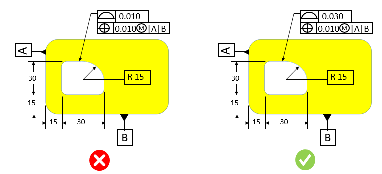

本ルールは、設定された材料に対応する最小のプロファイル公差および位置公差の値をチェックします。
プロファイル公差および位置公差は、形状と位置を正しく管理するための複合公差枠として指定されます。不要に厳しいプロファイル公差や位置拘束を追加すると、製造現場では両方の拘束条件の正確性を確保する必要があり、高度な技能を持つ作業者が求められるため、追加の加工時間が発生します。このような厳しい公差は、品質検査時間の増加にもつながります。
一般的なガイドラインとして、不要に厳しい公差を追加すると、余分な加工時間が増加する可能性があります。
ルール構成では、ユーザーがデフォルトの最小プロファイル公差および位置公差を設定できます。位置公差の設定は必須ではありません。本ルールは、材料およびそれに対応する公差値に基づいて合否判定を行います。

注記:
CADモデルに設定された公差は、eDrawingsレポートには表示されません。
ルール構成で設定されたプロファイル公差および位置公差の値は、公差ゾーンとして扱われます。
位置公差は、プロファイル公差と関連付けられている場合にのみ考慮されます。単独で指定された位置公差の注記は考慮されません。